Notes on quicksort
- Quicksort
- Analysis of Quicksort
- Lower Bound for Comparison Sorts
- O(n) Sorts (briefly)
Motivations
Quicksort, like Mergesort, takes a divide and conquer approach, but on a different basis.
If we have done two comparisons among three keys and find that x < p and p < y, do we ever need to compare x to y? Where do the three belong relative to each other in the sorted array?
Quicksort uses this idea to partition the set of keys to be sorted into those less than the pivot p and those greater than the pivot. (It can be generalized to allow keys equal to the pivot.) It then recurses on the two partitions.
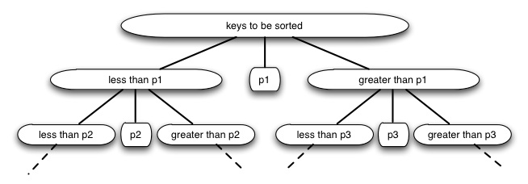
Compare this to Mergesort.
- Both take a recursive divide-and-conquer approach.
- Mergesort does its work on the way back up the recursion tree (merging), while Quicksort does its work on the way down the recursion tree (partitioning).
- Mergesort always partitions in half; for Quicksort the size of the partitions depends on the pivot (this results in Θ(n2) worst case behavior, but expected case remains Θ(n lg n).
- Mergesort requires axillary arrays to copy the data; while as we shall see Quicksort can operate entirely within the given array: it is an in-place sort.
Quicksort performs well in practice, and is one of the most widely used sorts today.
The Quicksort Algorithm
To sort any subarray A[p .. r], p < r:
Divide: Partition A[p .. r] into two (possibly empty) subarrays
- A[p .. q-1], where every element is ≤ A[q]
- A[q + 1 .. r], where A[q] ≤ every element Conquer: Sort the two subarrays by recursive calls Combine: No work is needed to combine: all subarrays (including the entire array) are sorted as soon as recursion ends.
An array is sorted with a call to QUICKSORT(A, 1, A.length):
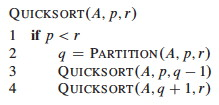
The work is done in the PARTITION procedure. A[r] will be the pivot. (Note that the end element of the array is taken as the pivot. Given random data, the choice of the position of the pivot is arbitrary; working with an end element simplifies the code):
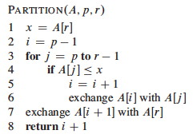
PARTITION maintains four regions.
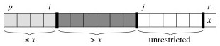
Three of these are described by the following loop invariants, and the fourth (A[j .. r-1]) consists of elements that not yet been examined:
Loop Invariant:
All entries in A[p .. i] are ≤ pivot.
All entries in A[i+1 .. j-1] are > pivot.
A[r] = pivot.
Example Trace
It is worth taking some time to trace through and explain each step of this example of the PARTITION procedure, paying particular attention to the movement of the dark lines representing partition boundaries.

Continuing ...

Here is the Hungarian Dance version of quicksort, in case that helps to make sense of it!
Correctness
Here use the loop invariant to show correctness:
- All entries in A[p .. i] are ≤ pivot.
- All entries in A[i+1 .. j −1] are > pivot.
- A[r] = pivot.
Initialization: Before the loop starts, x is assigned the pivot Ar, and the subarrays a[p .. i] and A[i+1 .. j−1] are empty (trivially satisfying conditions 1 and 2). Maintenance: While the loop is running,
- if A[j] ≤ pivot, then i is incremented, A[j] and A[i] are swapped, and j is incremented. Because of the swap, A[i] ≤ x for condition 1. The item swapped into A[j-1] > x by the loop invariant, for condition 2.
- If A[j] > pivot, then j is incremented, sustaining condition 2 (the others are unchanged), as the element added was larger Termination: The loop terminates when j=r, so all elements in A are partitioned into one of three cases: A[p .. i] ≤ pivot, A[i+1 .. r-1] > pivot, and A[r] = pivot. The last two lines fix the placement of A[r] by moving it between the two subarrays.
Informal Analysis
The formal analysis will be done on a randomized version of Quicksort. This informal analysis helps to motivate that randomization.
First, PARTITION is Θ(n): We can easily see that its only component that
grows with n is the for loop that iterates proportional to the number of
elements in the subarray).
The runtime depends on the partitioning of the subarrays:
Worst Case
The worst case occurs when the subarrays are completely unbalanced, i.e., there are 0 elements in one subarray and n-1 elements in the other subarray (the single pivot is not processed in recursive calls). This gives a familiar recurrence (compare to that for insertion sort):

One example of data that leads to this behavior is when the data is already sorted: the pivot is always the maximum element, so we get partitions of size n−1 and 0 each time. Thus, quicksort is O(n2) on sorted data. Insertion sort actually does better on a sorted array! (O(n))
Best Case
The best case occurs when the subarrays are completely balanced (the pivot is the median value): subarrays have about n/2 elements. The reucurrence is also familiar (compare to that for merge sort):
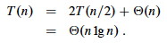
Effect of Unbalanced Partitioning
It turns out that expected behavior is closer to the best case than the worst case. Two examples suggest why expected case won't be that bad.
Example: 1-to-9 split
Suppose each call splits the data into 1/10 and 9/10. This is highly unbalanced: won't it result in horrible performance?
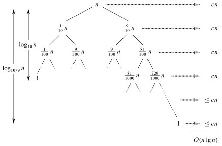
We have log10n full levels and log10/9n levels that are nonempty.
As long as it's constant, the base of the log does not affect asymptotic results. Any split of constant proportionality will yield a recursion tree of depth Θ(lg n). In particular (using ≈ to indicate truncation of low order digits),
log10/9n = (log2n) / (log210/9) by formula 3.15
≈ (log2n) / 0.152
= 1/0.152 (log2n)
≈ 6.5788 (log2n)
= Θ(lg n), where c = 6.5788.
So the recurrence and its solution is:

A general lesson that might be taken from this: sometimes, even very unbalanced divide and conquer can be useful.
Example: extreme cases cancel out
With random data there will usually be a mix of good and bad splits throughout the recursion tree.
A mixture of worst case and best case splits is asymptotically the same as best case:
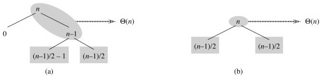
Both these trees have the same two leaves. The extra level on the left hand side only increases the height by a factor of 2, and this constant disappears in the Θ analysis.
Both result in O(n lg n), though with a larger constant for the left.
Randomized Quicksort

We expect good average case behavior if all input permutations are equally likely, but what if it is not?
To get better performance on sorted or nearly sorted data -- and to foil our adversary! -- we can randomize the algorithm to get the same effect as if the input data were random.
Instead of explicitly permuting the input data (which is expensive), randomization can be accomplished trivially by random sampling of one of the array elements as the pivot.
If we swap the selected item with the last element, the existing PARTITION procedure applies:
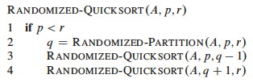
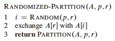
Now, even an already sorted array will give us average behavior.
Curses! Foiled again!
Quicksort Analysis
The analysis assumes that all elements are unique, but with some work can be generalized to remove this assumption (Problem 7-2 in the text).
Worst Case
The previous analysis was pretty convincing, but was based on an assumption about the worst case. This analysis proves that our selection of the worst case was correct, and also shows something interesting: we can solve a recurrence relation with a "max" term in it!
PARTITION produces two subproblems, totaling size n-1. Suppose the partition takes place at index q. The recurrence for the worst case always selects the maximum cost among all possible ways of splitting the array (i.e., it always picks the worst possible q):
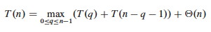
Based on the informal analysis, we guess T(n) ≤ cn2 for some c. Substitute this guess into the recurrence:
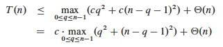
The maximum value of q2 + (n - q - 1)2 occurs when q is either 0 or n-1 (the second derivative is positive), and has value (n - 1)2 in either case:
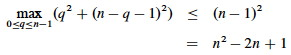
Substituting this back into the reucrrence:
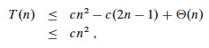
We can pick c so that c(2n - 1) dominates Θ(n). Therefore, the worst case running time is O(n2).
One can also show that the recurrence is Ω(n2), so worst case is Θ(n2).
Average (Expected) Case
With a randomized algorithm, expected case analysis is much more informative than worst-case analysis. Why?
This analysis nicely demonstrates the use of indicator variables and two useful strategies.
Setup
The dominant cost of the algorithm is partitioning. PARTITION removes the pivot element from future consideration, so is called at most n times.
QUICKSORT recurses on the partitions. The amount of work in each call is a
constant plus the work done in the for loop. We can count the number of
executions of the for loop by counting the number of comparisons performed
in the loop.
Rather than counting the number of comparisons in each call to QUICKSORT, it is easier to derive a bound on the number of comparisons across the entire execution.
This is an example of a strategy that is often useful: if it is hard to count one way (e.g., "locally"), then count another way (e.g., "globally").
Let X be the total number of comparisons in all calls to PARTITION. The total work done over the entire execution is O(n + X), since QUICKSORT does constant work setting up n calls to PARTITION, and the work in PARTITION is proportional to X. But what is X?
Counting comparisons
For ease of analysis,
- Call the elements of A z1, z2, ... zn, with zi being the ith smallest element.
- Define the set Zij = {zi, zi + 1, ... zj} to be the set of elements between zi and zj inclusive.
We want to count the number of comparisons. Each pair of elements is compared at most once, because elements are compared only to the pivot element and then the pivot element is never in any later call to PARTITION.
Indicator variables can be used to count the comparisons. (Recall that we are counting across all calls, not just during one partition.)
Let Xij = I{ zi is compared to zj }
Since each pair is compared at most once, the total number of comparisons is:
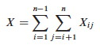
Taking the expectation of both sides, using linearity of expectation, and applying Lemma 5.1 (which relates expected values to probabilities):
 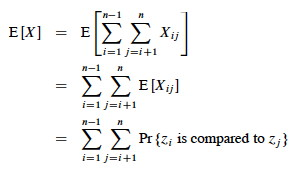
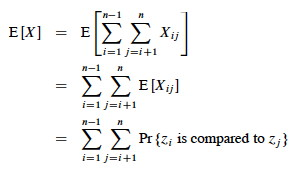
Probability of comparisons
What's the probability of comparing zi to zj?
Here we apply another useful strategy: if it's hard to determine when something happens, think about when it does _ not_ happen.
Elements (keys) in separate partitions will not be compared. If we have done two comparisons among three elements and find that zi < x <zj, we do not need to compare zi to zj (no further information is gained), and QUICKSORT makes sure we do not by putting zi and zj in different partitions.
On the other hand, if either zi or zj is chosen as the pivot before any other element in Zij, then that element (as the pivot) will be compared to all of the elements of Zij except itself.
- The probability that zi is compared to zj is the probability that either is the first element chosen.
- Since there are j - i + 1 elements in Zij, and pivots are chosen randomly and independently, the probability that any one of them is chosen first is 1/(j - i + 1).
Therefore (using the fact that these are mutually exclusive events):
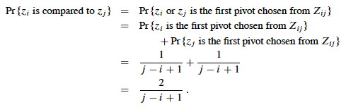
We can now substitute this probability into the analyis of E[X] above and continue it:

This is solved by applying equation A.7 for harmonic series, which we can match by substituting k = j - i and shifting the summation indices down i:
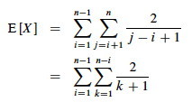
We can get rid of that pesky "+ 1" in the denominator by dropping it and switching to inequality (after all, this is an upper bound analysis), and now A7 (shown in box) applies:
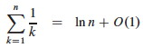 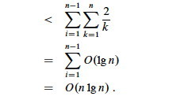
Above we used the fact that logs of different bases (e.g., ln n and lg n) grow the same asymptotically.
To recap, we started by noting that the total cost is O(n + X) where X is the number of comparisons, and we have just shown that X = O(n lg n).
Therefore, the average running time of QUICKSORT on uniformly distributed permutations (random data) and the expected running time of randomized QUICKSORT are both O(n + n lg n) = O(n lg n).
This is the same growth rate as merge sort and heap sort. Empirical studies show quicksort to be a very efficient sort in practice (better than the other _n lg n sorts) whenever data is not already ordered._ (When it is nearly ordered, such as only one item being out of order, insertion sort is a good choice.)
Lower Bound for Comparison Sorts
We have been studying sorts in which the only operation that is used to gain information is pairwise comparisons between elements. So far, we have not found a sort faster than O(n lg n).
It turns out it is not possible to give a better guarantee than O(n lg n) in a comparison sort.
The proof is an example of a different level of analysis: of all possible algorithms of a given type for a problem, rather than particular algorithms ... pretty powerful.
Decision Tree Model
A decision tree abstracts the structure of a comparison sort. A given tree represents the comparisons made by a specific sorting algorithm on inputs of a given size. Everything else is abstracted, and we count only comparisons.
Example Decision Tree
For example, here is a decision tree for insertion sort on 3 elements.
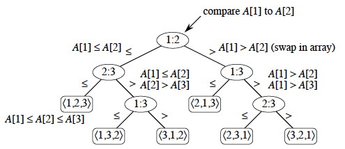
Each internal node represents a branch in the algorithm based on the information it determines by comparing between elements indexed by their original positions. For example, at the nodes labeled "2:3" we are comparing the item that was originally at position 2 with the item originally at position 3, although they may now be in different positions.
Leaves represent permutations that result. For example, "⟨2,3,1⟩" is the permutation where the first element in the input was the largest and the third element was the second largest.
This is just an example of one tree for one sort algorithm on 3 elements. Any given comparison sort has one tree for each n. The tree models all possible execution traces for that algorithm on that input size: a path from the root to a leaf is one computation.
Reasoning over All Possible Decision Trees
We don't have to know the specific structure of the trees to do the following proof. We don't even have to specify the algorithm(s): the proof works for any algorithm that sorts by comparing pairs of keys. We don't need to know what these comparisons are. Here is why:
- The root of the tree represents the unpermuted input data.
- The leaves of the tree represent the possible permuted (sorted) results.
- The branch at each internal node of the tree represents the outcome of a comparision that changes the state of the computation.
- The paths from the root to the leaves represent possible courses that the computation can take: to get from the unsorted data at the root to the sorted result at a leaf, the algorithm must traverse a path from the root to the correct leaf by making a series of comparisons (and permuting the elements as needed)
- The length of this path is the runtime of the algorithm on the given data.
- Therefore, if we can derive a lower bound on the height of any such tree, we have a lower bound on the running time any comparison sort algorithm.
Proof of Lower Bound
We get our result by showing that the number of leaves for a tree of input size n implies that the tree must have minimum height O(n lg n). This will be a lower bound on the running time of any comparison sort algorithm.
- There are at least n! leaves because every permutation appears at least once (the algorithm must correctly sort every possible permutation): l ≥ n!
- Any binary tree of height h has l ≤ 2h leaves (Notes #8)
- Putting these facts together: n! ≤ l ≤ 2h or 2h ≥ n!
- Taking logs: h ≥ lg(n!)
- Using Sterling's approximation (formula 3.17): n! > (n/e)n
- Substituting into the inequality:
h ≥ lg(n/e)n
= n lg(n/e)
= n lg n - n lg e
= Ω (n lg n).
Thus, the height of a decision tree that permutes n elements to all possible permutations cannot be less than n lg n.
A path from the leaf to the root in the decision tree corresponds to a sequence of comparisons, so there will always be some input that requires at least O(n lg n) comparisions in any comparision based sort.
There may be some specific paths from the root to a leaf that are shorter. For example, when insertion sort is given sorted data it follows an O(n) path. But to give an o(n lg n) guarantee (i.e, strictly better than O(n lg n)), one must show that _ all_ paths are shorter than O(n lg n), or that the tree height is o(n lg n) and we have just shown that this is impossible since it is Ω(n lg n).
O(n) Sorts
Under some conditions it is possible to sort data without comparing two elements to each other. If we know something about the structure of the data we can sometimes achieve O(n) sorting. Typically these algorithms work by using information about the keys themselves to put them "in their place" without comparisons. We only introduce these algorithms very briefly so you are aware that they exist.
Counting Sort
Assumes (requires) that keys to be sorted are integers in {0, 1, ... k}.
For each element in the input, determines how many elements are less than that input.
Then we can place the element directly in a position that leaves room for the elements below it.
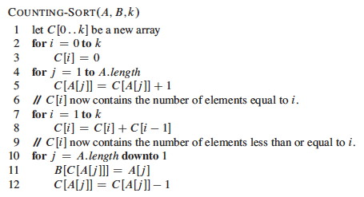
An example ...
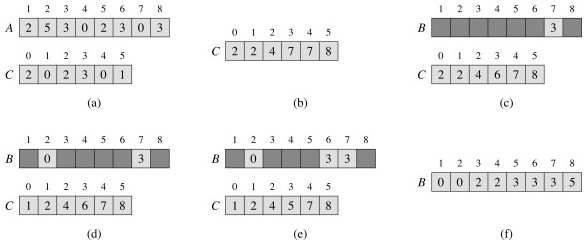
Counting sort is a stable sort, meaning that two elements that are equal under their key will stay in the same order as they were in the original sequence. This is a useful property ...
Counting sort requires Θ(n + k). Since k is constant in practice, this is Θ(n).
Radix Sort
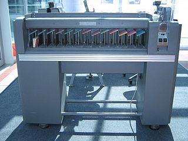
Using a stable sort like counting sort, we can sort from least to most significant digit:
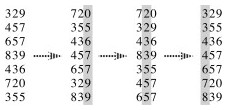
This is how punched card sorters used to work. _ (When I was an undergraduate student my University still had punched cards, and we had to do an assignment using them mainly so that we would appreciate not having to use them!)_
The code is trivial, but requires a stable sort and only works on n d- digit numbers in which each digit can take up to k possible values:
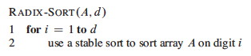
If the stable sort used is Θ(n + k) time (like counting sort) then RADIX- SORT is Θ(d(n + k)) time.
Bucket Sort
This one is reminiscent of hashing with chaining.
It maps the keys to the interval [0, 1), placing each of the n input elements into one of n-1 buckets. If there are collisions, chaining (linked lists) are used.
Then it sorts the chains before concatenating them.
It assumes that the input is from a random distribution, so that the chains are expected to be short (bounded by constant length).
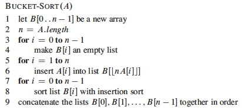
Example:
The numbers in the input array A are thrown into the buckets in B according to their magnitude. For example, 0.78 is put into bucket 7, which is for keys 0.7 ≤ k < 0.8. Later on, 0.72 maps to the same bucket: like chaining in hash tables, we "push" it onto the beginning of the linked list.
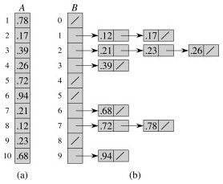
At the end, we sort the lists (B shows the lists after they are sorted; otherwise we would have 0.23, 0.21, 0.26) and then copy the values from the lists back into an array.
But sorting linked lists is awkward, and I am not sure why CLRS's pseudocode and figure imply that one does this. In an alternate implementation, steps 7-9 can be done simultaneously: scan each linked list in order, inserting the values into the array and keeping track of the next free position. Insert the next value at this position and then scan back to find where it belongs, swapping if needed as in insertion sort.
Since the values are already partially sorted, an insertion procedure won't have to scan back very far. For example, suppose 0.78 had been inserted after 0.72. The insertion would only have to scan over one item to put 0.78 in its place, as all values in lists 0..6 are smaller.
Comparing the Sorts
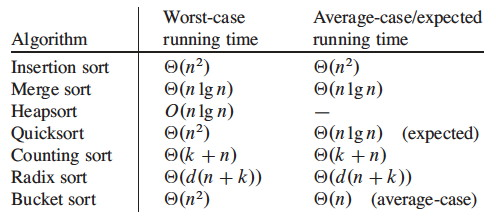
You can also compare some of the sorts with these animations (set to 50 elements): http://www.sorting-algorithms.com/. Do the algorithms make more sense now?
Next
We return to the study of trees, with balanced trees.
Dan Suthers Last modified: Wed Feb 19 02:14:38 HST 2014
Images are from the instructor's material for Cormen et al. Introduction to
Algorithms, Third Edition, and from Wikipedia commons.